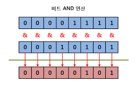
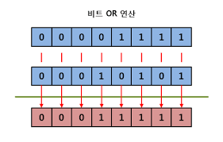
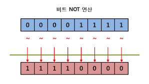
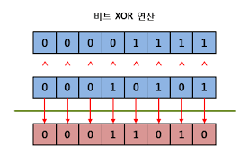

수식과 연산자
이번 시간에는 자료들 끼리의 연산에 대해서 알아보자. 조금 어려운 내용일 수 있어.
수식이란?
수식(expression) 은 피연산자들 ( 변수나 값 ) 과 연산자와의 조합이라고 할 수 있다.
연산자(operator) 는 어떤 연산을 나타내는 기호를 의미한다.
그러면 어떤 연산들이 있는 알아보자.
| 연산자의 분류 | 연산자 | 의미 |
|---|---|---|
| 대입 | = | 오른쪽의 값을 왼쪽 변수에 대입 |
| 산술 | + - * / ,// % | 더하기 빼기 곱하기 나누기의 산술연산이다. //는 몫, %는 나머지를 구하는 연산 |
| 산술 및 대입 | +=, -=, *=, /=, //=, %= | 오른쪽의 값과 왼쪽에 있는 값을 산술하여 왼쪽에 있는 변수에 대입한다 |
| 부호 | + - | 양수인지 음수인지 표현 |
| 관계 | >, <, >=, <=, =, != | 오른쪽과 왼쪽의 값을 비교 결과는 불린형 |
| 논리 | and, or, not | 오른쪽과 왼쪽의 값을 참/거짓에 대해 논리연산을 한다 |
| 비트 단위 연산 | &, |, ^, ~, >>, << | 주어진 수를 이진수로 보고 비트단위연산을 한다. |
차례대로 알아보도록 하자.
산술 연산
이미 이전 시간에도 산술 연산을 해봤고, 우리는 이 연산에 익숙하다.
+ 는 더하기, - 는 빼기, / 는 나누기, * 는 곱하기 등은 알 것이다.
추가적으로 알아야 하는 것은 // 와 % 가 있는데, a//b 는 a 를 b 로 나누었을 때의 몫을 구해준다.
또 %는 나머지를 구해주며 a%b 는 a를 b로 나누었을 때 나머지를 구해준다. 이 때 나머지는 음수가 되지 않도록 정의하여 0 <= a%b < b 가 성립한다.
이 때, 몫과 나머지 공식에 의하여 a = (a//b)*b + a%b 가 성립한다.
이 때 /, //, % 는 나누기와 연관이 있기 때문에 0 으로 나누면 ZeroDivisionError 가 나게 된다.
아래 표는 사용 예시이다.| 연산자 | 기호 | 사용 예 | 결과 값 |
|---|---|---|---|
| 덧셈 | + | 7 + 3 | 10 |
| 뺄셈 | - | 7 - 3 | 4 |
| 곱셈 | * | 7 * 3 | 21 |
| 나눗셈 | / | 1 / 2 | 0.5 |
| 몫 | // | 7 // 3 | 2 |
| 나머지 | % | 7 % 3 | 1 |
| 몫 | // | 1 // 2 | 0 |
| 나머지 | % | 1 % 2 | 1 |
| 몫 | // | -1 // 2 | -1 |
| 나머지 | % | -1 % 2 | 1 |
| 몫 | // | 7 // 1.6 | 4.0 |
| 나머지 | % | 7 % 1.6 | 0.6 |
이 때 연산자 끼리 우선순위가 존재하기 때문에 곱하기나 나누기가 덧셈뺄셈보다 먼저 계산된다.
따라서 계산의 순서를 명확히 하기 위해서 '(' 괄호 연산자를 활용할 수 있다.
또 괄호를 중복할 수도 있는데, 중괄호나 대괄호 는 따로 쓰지않고 모두 괄호로 표현한다.
# example 0. 괄호활용
print(1 + 2*4)
print((1+2)*4)
print(2*((1+2)*3))
산술 및 대입연산
산술 및 대입연산은 산술 후 결과를 바로 대입하는 연산자이며, 사용하지 않아도 지장은 없지만 코드의 길이를 줄이고 때때로 가독성 향상에 도움을 주는 장점이 있다.
기호의 생김새는 산술연산과 대입연산자 = 을 합친 모양이다. 아래 코드는 간단한 예시이다.
# example 1. 산술 및 대입연산
a = 1
print(a)
a += 5 # a는 6 이 된다.
print(a)
a *= 3 # a는 18 이 된다.
print(a)
a /= 3 # a는 6 이 된다.
print(a)
a %= 5 # a는 1 이 된다.
print(a)
a += 1 이라고 쓰게 되면 a = a + 1 이라는 코드와 의미가 동일하다. 마찬가지로 a *= 3 는 a = a*3 과 동일하다.
a = a+1 이라는 문장은 보기에 어색할 수 있다. 하지만 프로그래밍에서 = 는 수학에서의 = 과 달리 같다는 의미가 아니라
오른쪽에 있는 값을 왼쪽에 있는 변수에 대입한다는 의미임을 기억하자.
부호 연산
부호 연산은 부호를 바꿔주는 역할을 하는 연산자이다.
# example 2. 부호 연산
a = 1
b = -a
print(a) # a는 1 이다. 부호를 앞에 붙여도 안에 있는 값이 변경되는 것은 아니다!
print(b) # b는 -1 이다.
a = -a
print(a) # a는 -1 이다.
부호 연산이 부호를 바꿔주지만 위의 코드를 보면 b = -a 를 했을 때 a 의 값은 변경되지 않았다.
이는 -a 라는 것은 a 의 부호를 바꾼 새로운 값을 만든 다음에 그 값을 활용하였기 때문이다.
# example 2-1. 부호 연산
a = 1
b = 2*a
print(a) # a는 1 이다.
print(b) # b는 2 이다.
사실 생각해보면 당연한건데, 위에서 2*a 를 했을 때 a의 값이 변경되지 않은 것처럼, -a 는 (-1)*a 와 같다고 생각하면 되겠다.
관계 연산
관계연산은 두 피연산자가 같거나 다르거나, 더 작냐 크냐 등을 알 수 있는 연산자야.
결과 값으로 bool 타입이 나오기 때문에 나중에 배우는 조건문과 같이 쓰게될거야.
아래 코드의 결과로 뭐가 출력될지 미리 예상해보고 실제로 실행해서 결과를 확인해보자.
# example 3. 관계연산
print(1>2)
print(1>=2)
print(1<=2)
print('a'<'b') # 문자열로도 관계연산이 가능하다
print('abc' <= 'b')
print(1/5>=1/6)
print(123 == 123)
print(123 != 123)
print('123' != '1')
print('123' == '123')
논리 연산
논리연산은 and, or, not 같은 기호를 연산자로 사용해. 연산의 결과는 아래 표를 보자.
| 기호 | 사용 예시 | 결과 |
|---|---|---|
| and | True and True | True |
| and | True and False | False |
| and | False and True | False |
| and | False and False | False |
| and | False and False | False |
| or | True or True | True |
| or | True or False | True |
| or | False or True | True |
| or | False or False | False |
| not | not True | False |
| not | not False | True |
이 떄 산술연산과 마찬가지로 '(' 괄호 연산자를 활용하여 복잡한 구조의 논리식을 만드는 것도 가능하다.
또한 관계 연산의 결과가 논리값이 나오기 때문에 관계 연산의 결과값을 논리연산에 바로 사용하는 것도 가능하다.
Q. 아래 결과가 무엇이 나올까?
# example 4. 간단한 논리식과 복잡한 논리식
print(True and False)
print(1==1 and 1==2)
print(1==2 or 1==3 or 1==4)
print((2 >= (3-1)) or False )
print(False and (True and (False or True)))
print(1 < 3 and 3 < 5)
print(1 < 3 and 3 < 1)
비트 단위 연산
비트 단위 연산은 정수를 2진수로 보고 이 2진수에 대한 연산들이야.
우선 본격적으로 해보기 전에 bin 이라는 함수에 대해 소개해줄게.
# example 5. bin
print(bin(1)) # 0b1
print(bin(2)) # 0b10
print(bin(3)) # 0b11
print(bin(4)) # 0b100
print(bin(5)) # 0b101
print(bin(6)) # 0b110
print(bin(7)) # 0b111
print(bin(8)) # 0b1000
print(bin(9)) # 0b1001
print(bin(10)) # 0b1010
bin 은 주어진 수를 "이진수" 로 나타냈을 때 어떻게 표현되는지 문자열형태로 알려주는 편리한 함수야.
이 때 앞에 붙은 0b 는 이진수로 표현되었다고 알려주는 일종의 표시같은거야.
비트 단위연산자가 어떻게 동작하는지 아래 코드를 보자.
# example 5. 비트연산자
print(1) # 1
print(1 << 1) # 2
print(bin(1)) # 0b1
print(bin(1 << 1)) # 0b10
<< 는 좌시프트 연산인데, 어떤 수 x 에 대해서 x << y 의 값은, x의 이진수을 왼쪽으로 y번 만큼 옮긴 수 를 의미해.
예를 들면 1이 이진법으로 1 이지. 그래서 이걸 1 << 1 은 1을 왼쪽으로 1칸 미니까 10 이 된거야. 그리고 이진수 10 은 십진수로 2를 의미해서 2 가 출력된거야.
참고로 좌시프트 연산은 왼쪽으로 한 칸밀면서 생기는 빈칸은 0으로 채우는 걸 볼 수 있어.
다음으로 우시프트 연산을 볼까.
# example 5-1. 비트연산자
print(2) # 2
print(1 >> 1) # 1
print(bin(2)) # 0b10
print(bin(1 >> 1)) # 0b1
>> 는 우시프트 연산인데, 어떤 수 x 에 대해서 x >> y 의 값은 x의 이진수을 오른쪽으로 y번 만큼 옮긴 수 를 의미해.
2 가 이진수로 10 이기 때문에 오른쪽으로 한번 옮기면 1 이고 이게 십진수로 1이여서 1이 출력된 것이지.
헷갈리지? 왜 이런 헷갈리는 연산이 있는걸까.
이유는 우리한텐 친숙하지 않은 연산이라도 컴퓨터한테는 굉장히 친숙한 연산이기 때문이야.
우시프트나 좌시프트는 컴퓨터 입장에서는 메모리에 저장된 데이터를 한 칸 옆으로 밀면 될 뿐이니까.
나는 비트연산자를 알고리즘 문제를 풀거나 할 때는 많이 쓰고 분명 필요한 상황이 있는 것은 사실이야.
또 다른 비트연산도 있는데, &, |, ~, ^ 가 있어. 어떤 정수 x, y 가 있을 때,
x & y 의 값은 x와 y 의 이진수를 각 bit 별로 and 한 결과로 새로운 수를 만드는 것이고,
x | y 는 x 와 y 의 이진수를 각 bit 별로 or 한 결과로 새로운 수를 만드는 것이고,
~x 는 x 의 이진수를 각 bit 별로 not 한 결과로 새로운 수를 만드는 것이고,
x ^ y 는 x 와 y 의 이진수를 각 bit 별로 xor 한 결과로 새로운 수를 만드는 것이야.
xor 연산은 두 비트가 다르면 1 이되고, 두 비트가 같으면 0 이 되는 연산이야.
헷갈리겠지만 결과를 보고 이해해보장~
| 기호 | 사용 예시 | 결과 |
|---|---|---|
| & | 1 & 1 | 1 |
| & | 1 & 2 | 0 |
| & | 3 & 0 | 0 |
| | | 1 | 2 | 3 |
| | | 1 | 0 | 1 |
| | | 100 | 0 | 100 |
| ~ | ~0 | -1 |
| ~ | ~1 | -2 |
| ^ | 3 ^ 0 | 3 |
| ^ | 1 ^ 3 | 2 |
| ^ | 1 ^ 4 | 5 |
확인 하는 방법은 각 수를 이진법으로 나타내본 뒤에 연산을 수행하고, 다시 십진법으로 바꿨을 때 값을 구하면 되겠어.
중간에 보면 ~(not) 연산 결과가 이상하다고 생각이 들텐데,
~0 의 값이 왜 -1 인지 궁금할거야.
0 은 이진수로 00000000...0000 이니까 ~0 은 1111111...1111 이겠지? 그런데 111111...1111 을 십진법으로 바꾸면 -1 이 되는걸까?
그것에 관한 비밀은 컴퓨터 안에 음수가 어떻게 저장되는지, 2의 보수법이 뭔지를 이해해야 하는데,
정말 간단히 말하면 ~x + 1 = -x 이 성립하기 때문인데, 이거에 대해선 음수가 2진법으로 어떻게 표현되는지와 2의 보수를 알아야하는데,
c언어를 배울 때 같이 하는데 명확할 것 같아서 이건 나중에 하자.
연산자 실습
- 사용자로 부터 수 x 를 입력받아 변수 y 에 x*x -2*x +1 를 대입하여 y 를 출력하기
- 사용자로 부터 수 x 를 입력받아 변수 q 에 x 를 2로 나눈 몫을 대입하고 r 에 x 를 2로 나눈 나머지를 대입하여 q 와 r 를 한줄에 하나씩 출력하기
- 사용자로 부터 수 x 와 y 를 입력 받아 변수 q 에 x 를 y로 나눈 몫을 대입하고, r 에 x 를 y로 나는 나머지를 대입하여 q와 r 을 한 줄에 하나씩 출력하기
- 사용자로 부터 수 x 를 입력받아 -x 출력하기
- 사용자로 부터 수 x 와 y 를 입력받아 산술 대입 연산을 이용하여 x 에 y 를 더하기. 그리고 x 를 출력하기
- 사용자로 부터 수 x 를 입력받아 x 가 1 보다 크면 True 아니면 False 가 출력되게 하기
- *사용자로 부터 수 x 를 입력받아 2로 나누어 떨어지면 True 아니면 False 가 출력되게 하기
- 사용자로 부터 수 x와 y 를 입력받아 x 가 y 보다 크면 True 아니면 False 가 출력되게 하기
- 사용자로 부터 수 x와 y 를 입력받아 x 와 y 가 같으면 True 아니면 False 가 출력되게 하기
- **사용자로 부터 수 x, y 와 z 를 입력받아 x 가 y 보다 크면서 z 보다도 크면 True 아니면 False 가 출력되게 하기
- ***사용자로 부터 수 x 를 입력받아 15로 나누어 떨어지면 True 아니면 False 가 출력되게 하기
- 사용자로 부터 수 x 를 입력받아 왼쪽으로 1칸 쉬프트 한 값을 출력하기
- 사용자로 부터 수 x 를 입력받아 오른쪽으로 1칸 쉬프트 한 값을 출력하기
- 사용자로 부터 수 x, y 를 입력받아 x 를 왼쪽으로 1칸 쉬프트 한 값과 y 를 & 한 값을 출력하기
- 사용자로 부터 수 x, y 를 입력받아 x 와 y 를 | 한 값을 1칸 왼쪽으로 쉬프트한 값을 출력하기
- *사용자로 부터 수 x, y 를 입력받아 x 와 0을 ^ 한 값을 출력하기 이 때 출력된 값과 x 는 어떠한 관계가 있는가?
- *사용자로 부터 수 x를 입력받아 x 와 왼쪽으로 1칸 쉬프트한 값을 출력하기 이 때 출력된 값과 x 는 어떠한 관계가 있는가?
- *사용자로 부터 수 x를 입력받아 x 와 오른쪽으로 1칸 쉬프트한 값을 출력하기 이 때 출력된 값과 x 는 어떠한 관계가 있는가?